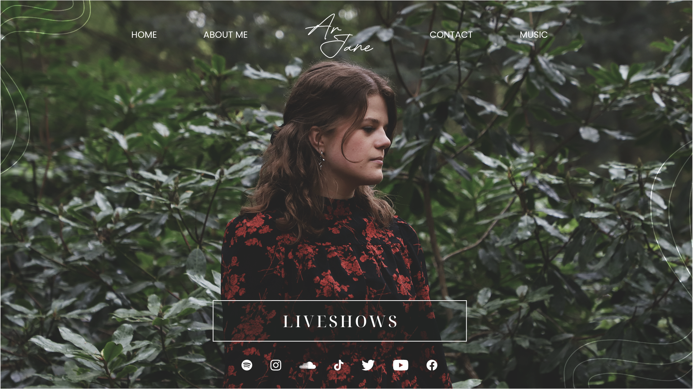
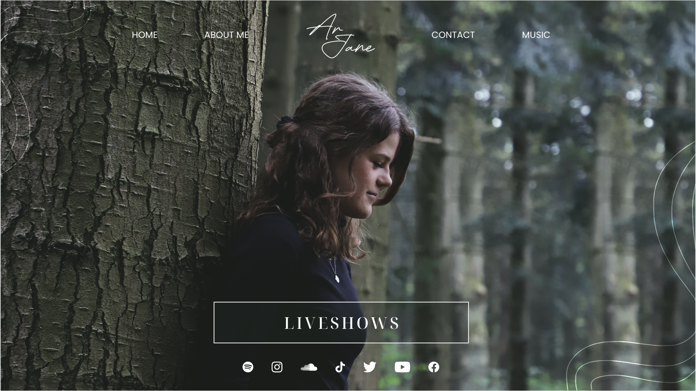
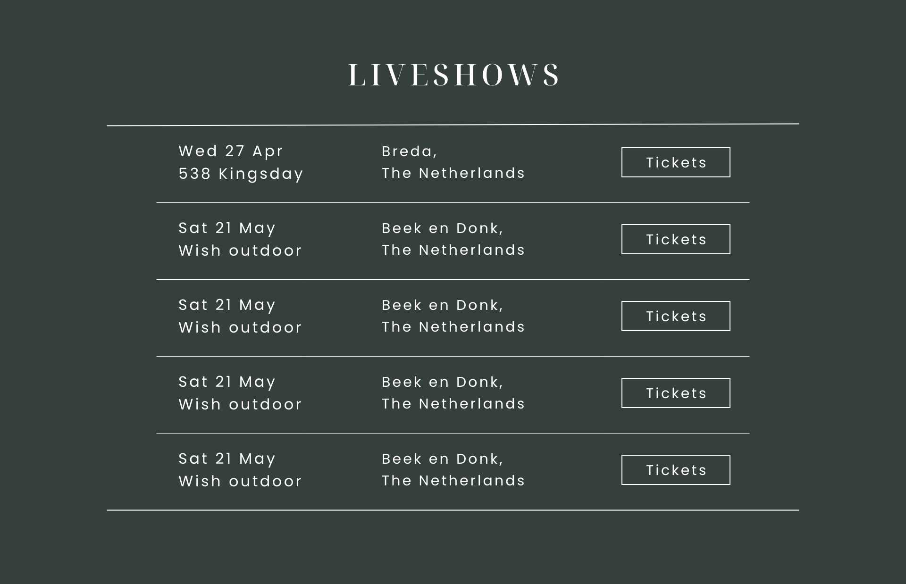
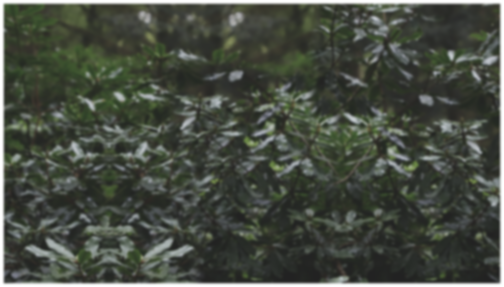
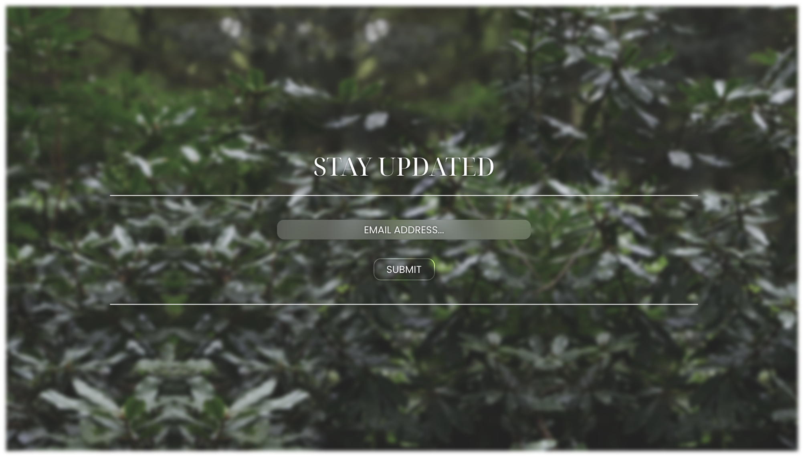
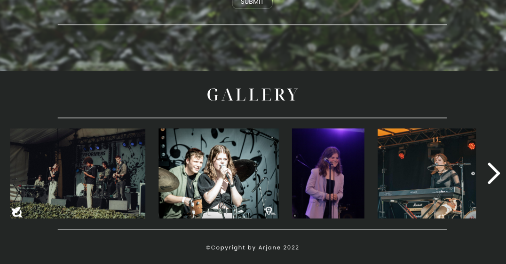
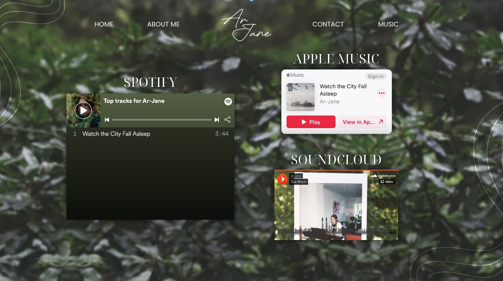
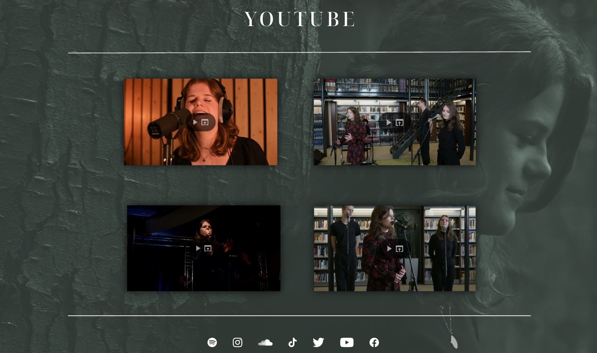
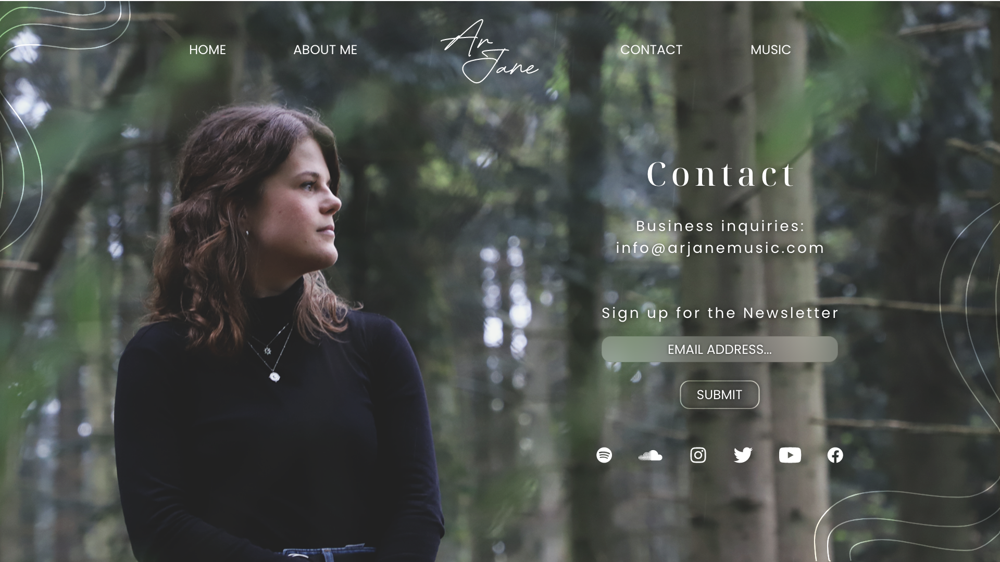
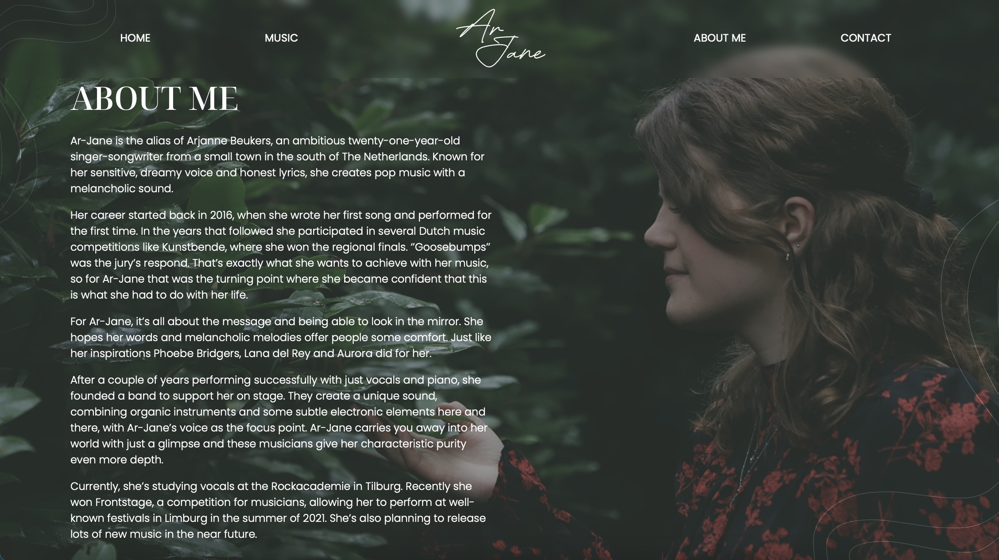

definitieve ar-jane website opzet
Aanpak
Na individueel allemaal concepten voor een website opzet voor Ar-Jane gemaakt te hebben en een fotoshoot gedaan te hebben, was het eindelijk tijd om een volledige website te maken voor Ar-Jane. We voegden alles toe wat we hadden een kwamen uiteindelijk op een opzet waar iedereen mee tevreden was, hieronder lees je het volledige proces.
De hoofdpagina
Ik begon met het aanpassen van ons originele design naar een design met de nieuwe foto's van de fotoshoot. Na gezocht te hebben naar bruikbare foto's kwam ik op 2 foto's uit. Hiermee begon ik de front-pagina te veranderen met deze 2 foto's en kwam ik uit op deze designs.
 Wij konden er als groep niet uitkomen welke van deze designs nou het beste was, dus wij stuurden beide designs op naar Ar-Jane om haar mening te vragen. Uiteindelijk bleek het dat zij, net als wij, geen keuze kon maken dus ze liet het aan ons over. Uiteindelijk hebben wij gekozen voor het eerste design omdat haar jurk een mooi contrast kleur gaf aan de groene hoofdkleur van de website.
Nadat de voorpagina besloten was, gingen we verder met het toevoegen van meer dingen aan de eerste pagina. In Rens zijn design had hij een sectie voor al Ar-Jane's liveshows, dit vond Ar-Jane zelf een goed idee voor in haar website dus dit hebben we ook toegevoegd in de opzet. Zo zag de sectie eruit.
Na de liveshows toegevoegd te hebben aan de opzet, hebben we iets vanuit mijn design toegevoegd aan deze opzet: een newsletter. Zoals je kon zien in mijn concept design van de website had ik een newsletter gemaakt waarmee je als gebruiker je kon inschrijven om updated te blijven met al het nieuws omtrent Ar-Jane en haar muziek. Om dat in deze opzet te zetten heb ik er een andere achtergrond voor moeten maken. Om dit te doen heb ik Ar-Jane, zoals in de vorige design, uit de foto weggewerkt met Photoshop, uiteindelijk was dit het resultaat daarvan. Daarnaast zie je hoe de newsletter, gecombineerd met de achtergrond, eruit ziet.
 Om de hoofdpagina af te maken hadden we nog een gallerij toegevoegd met allemaal foto's van Ar-Jane's optredens en alledaagse foto's. Het is natuurlijk de bedoeling dat zij dit uiteindelijk zelf kan aanpassen in de website. Maar om de hoofdpagina tot een einde te brengen, sloten we het af met een gallerij die er zo uitziet.
De muziekpagina
De eerstvolgende pagina waar ik aan werkte was de muziekpagina. In mijn vorige design had ik deze ook gemaakt, maar in dit design heb ik het ietsjes anders gedaan met een achtergrond die het wat strakker uit laat zien. Ik heb hetzelfde principe gehouden, alleen wat meer gefocust op het scheiden van haar muziekplatformen met haar YouTube video's. Hieronder zie je de helft van de pagina met haar muziekplatformen. Daarnaast zie je de andere helft, ik heb geprobeerd om dit deel een eigen design te geven om het te onderscheiden met de eerste helft en een wat professionelere algemene look te geven.
 De contactpagina
De laatste pagina waar ik aan heb gewerkt heb ik samen met mijn groepsgenoot, Cicilia, gemaakt. Dit was de contactpagina en het was de bedoeling om deze kort maar krachtig te maken. Niet te druk, gewoon duidelijkheid met een rustgevende maar professionele uitstraling. Uiteindelijk kwamen we op dit design.
De about-me pagina
Deze pagina heeft mijn groepsgenoot, Madelief, gedesigned. Zij hield zich natuurlijk ook aan de rustgevende, minimalistische stijl die aangehouden was bij het designen van alle pagina's. Ze had de al-geschreven biografie op een erin gezet op een manier die aansloot op de rest van de pagina's en uiteindelijk zag het er zo uit.
De volledige website
Na alle designs bij elkaar gebracht te hebben, zijn Rens en Cas dit gaan omzetten tot een volledig aanpasbare WordPress website. Hieronder is een video waarin de website volledig tentoongesteld wordt.
Feedback
Qua feedback kregen we van Ar-Jane te horen dat ze er zeker blij mee was. Ze vond het er
professioneel, rustgevend en overzichtelijk uitzien en het viel direct bij haar in de smaak. We
waren natuurlijk heel blij met deze feedback aangezien dit precies is waar we vanaf het begin van
dit semester naar streefden.
Van docenten kregen we vooral te horen dat dit goed op Ar-Jane's
muziek, en de sfeer die ze daarmee wilt creëren, aansluit. Ook werd er de nadruk gelegd op het feit
dat we haar goed betrokken met dit ontwerp wat uiteindelijk heeft gezorgd voor een mooi resultaat.
Uit een User Test die ik afgenomen heb, bleek ook dat de meerderheid van mensen vonden dat het
design er goed afstemde op de sfeer die Ar-Jane brengt met haar muziek. Dus al met al ben ik zeker
tevreden, en mijn groepje ook.
© 2022 Yassin Chehlaoui